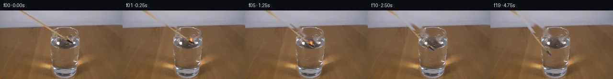

![首帧]()

Round 00
2026-11-05T06:15:14.647591+00:00像素候选变化代码 +288/−0inspection 更新
pixels b6d0d814753bf1d8 · code 4113b6c835e78475
查看本轮 generate.py 真实 diff
--- previous/generate.py +++ current/generate.py @@ -0,0 +1,288 @@ +#!/usr/bin/env python3 +"""Generate the 20-frame PixelWorld continuation from the supplied RGB frame. + +The photographed match is isolated with measured geometric masks, the revealed +background is locally inpainted, and the match is rotated about its off-frame +upper-left support. Fire, water attenuation, ripples, and smoke are analytic +pixel layers. No external images or models are used. +""" + +from pathlib import Path + +import cv2 +import numpy as np +from PIL import Image, ImageDraw + +import artifact_io + + +ROOT = Path(__file__).resolve().parent +H, W = 144, 256 +Y, X = np.mgrid[0:H, 0:W].astype(np.float32) + + +def smoothstep(edge0, edge1, value): + t = np.clip((value - edge0) / (edge1 - edge0), 0.0, 1.0) + return t * t * (3.0 - 2.0 * t) + + +def segment_coordinates(p0, p1): + """Return along-segment projection and perpendicular distance grids.""" + vx, vy = float(p1[0] - p0[0]), float(p1[1] - p0[1]) + length2 = vx * vx + vy * vy + projection = ((X - p0[0]) * vx + (Y - p0[1]) * vy) / length2 + qx = p0[0] + np.clip(projection, 0.0, 1.0) * vx + qy = p0[1] + np.clip(projection, 0.0, 1.0) * vy + distance = np.hypot(X - qx, Y - qy) + return projection, distance + + +def rotated_ellipse_alpha(cx, cy, along_radius, across_radius, p0, p1, feather=0.22): + """Soft ellipse aligned to the measured match shaft.""" + vx, vy = float(p1[0] - p0[0]), float(p1[1] - p0[1]) + norm = np.hypot(vx, vy) + ux, uy = vx / norm, vy / norm + dx, dy = X - cx, Y - cy + along = dx * ux + dy * uy + across = -dx * uy + dy * ux + radius = np.sqrt((along / along_radius) ** 2 + (across / across_radius) ** 2) + return 1.0 - smoothstep(1.0 - feather, 1.0 + feather, radius) + + +def build_source_masks(): + p0, p1 = (51.0, -4.0), (145.0, 65.0) + projection, distance = segment_coordinates(p0, p1) + shaft = (1.0 - smoothstep(2.1, 4.3, distance)) + shaft *= smoothstep(-0.035, 0.005, projection) + shaft *= 1.0 - smoothstep(0.985, 1.03, projection) + + head = rotated_ellipse_alpha(144.6, 64.6, 7.2, 4.7, p0, p1, feather=0.18) + object_alpha = np.maximum(shaft, head).astype(np.float32) + + # The photographed flame is an irregular small patch above/left of the head. + flame_a = rotated_ellipse_alpha(141.0, 58.9, 7.0, 5.2, (141, 66), (140, 53), feather=0.30) + flame_b = rotated_ellipse_alpha(144.0, 60.0, 4.8, 3.8, (144, 65), (143, 54), feather=0.30) + source_flame = np.maximum(flame_a, 0.8 * flame_b).astype(np.float32) + + cleanup = np.maximum(object_alpha, source_flame) + cleanup = cv2.dilate((cleanup > 0.025).astype(np.uint8), np.ones((5, 5), np.uint8), iterations=1) + return object_alpha, source_flame, cleanup + + +def warp_premultiplied(rgb, alpha, matrix): + premult = rgb.astype(np.float32) * alpha[..., None] + wa = cv2.warpAffine(alpha, matrix, (W, H), flags=cv2.INTER_LINEAR, + borderMode=cv2.BORDER_CONSTANT, borderValue=0) + wp = cv2.warpAffine(premult, matrix, (W, H), flags=cv2.INTER_LINEAR, + borderMode=cv2.BORDER_CONSTANT, borderValue=0) + wrgb = wp / np.maximum(wa[..., None], 1e-5) + return wrgb, np.clip(wa, 0.0, 1.0) + + +def composite(dst, color, alpha): + a = np.clip(alpha, 0.0, 1.0)[..., None] + return dst * (1.0 - a) + color * a + + +def point_transform(matrix, point): … diff truncated; 201 more lines …